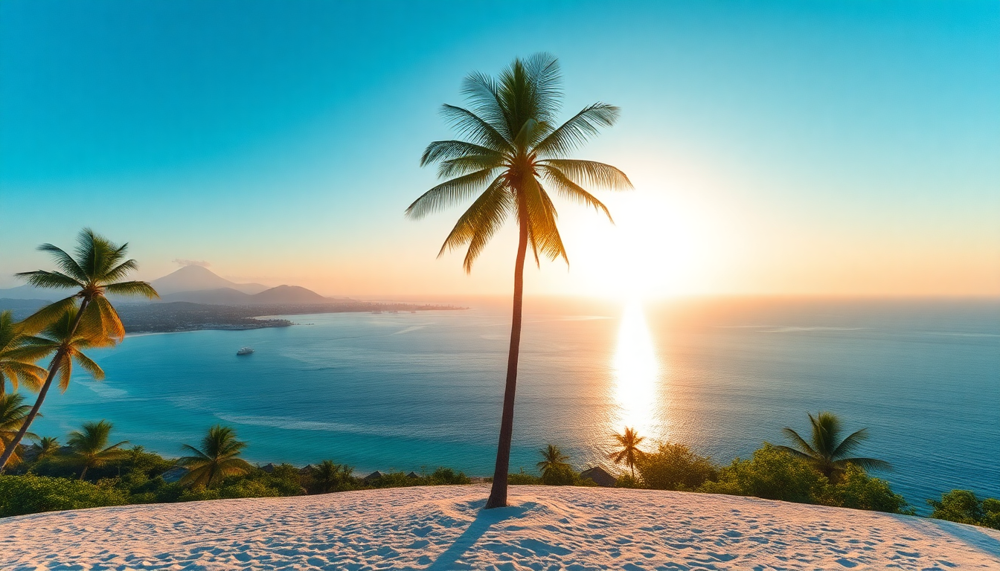

Best Beaches in Maldives: Top Resorts and Sandbanks

I’ve spent weeks island-hopping across the Maldives, from the crowded ferry docks of Male to the silent sandbanks of Ari Atoll. This guide cuts through the glossy resort brochures and tells you exactly which beaches are worth your time—and which ones you can skip. Whether you’re on a backpacker budget or splurging on a water villa, here’s what I’ve learned.
What makes a beach in the Maldives worth visiting?
The Maldives has over 1,000 islands, but not every stretch of sand is equal. The best beaches combine soft, powdery sand (not the coarse coral rubble you’ll find on some local islands), clear water with no seaweed, and easy access to shade or a bar. I’ve found that sandbanks—tiny, uninhabited spits of sand that appear at low tide—offer the most surreal experience. They’re often empty, and you feel like you’re floating in the middle of the Indian Ocean.
- Hulhumale Beach in Male: A man-made island with a long, clean public beach. It’s packed on weekends, but on a weekday morning, you’ll have it mostly to yourself. No resorts, just locals playing football.
- Sandbanks near Maafushi: These are accessible by a short dhoni boat ride. We booked a half-day trip through a local guesthouse for about $30 per person. No facilities, so bring water and a sunshade.
- Bikini Beach on Rasdhoo: A designated area for tourists (locals swim in clothes). The water is calm, but the sand is mixed with crushed shells—bring water shoes.
Which resorts in North Male Atoll have the best beaches?
North Male Atoll is the most accessible cluster of resorts from Male. The speedboat transfers take 20 to 45 minutes. I’ve stayed at three resorts here, and the beach quality varies wildly. Some have house reefs that are almost dead from bleaching; others have pristine sandbars.
- Anantara Veli: The beach is narrow but the lagoon is huge. We snorkeled right off the shore and saw baby reef sharks. The sand is that classic white powder. Downside: the main restaurant is a bit of a walk from the beach.
- Coco Palm Bodu Hithi: My personal favorite. The beach wraps around the entire island, and the sand is so fine it squeaks under your feet. The house reef is healthy—we spotted a turtle on our first snorkel.
- Club Med Kani: The beach is wide and groomed daily, but it gets crowded because the resort is all-inclusive and popular with families. If you want quiet, walk to the far end near the water villas.
What are the best beaches in Ari Atoll for snorkeling?
Ari Atoll is further from Male—a 30-minute seaplane or a 2-hour speedboat. The trade-off is better marine life. I saw manta rays and whale sharks here, and the house reefs are generally healthier than in North Male. The beaches themselves are less manicured, but that’s part of the charm.
- Constance Moofushi: The beach is a long, uninterrupted stretch of soft sand. The house reef starts just 20 meters from shore. We snorkeled at dawn and saw a hawksbill turtle grazing on coral.
- Lily Beach Resort: The beach is wide and clean, but the real draw is the lagoon. It’s shallow for hundreds of meters, perfect for floating. The sandbank at low tide connects to a small island—great for photos.
- Dhigurah Island: This is a local island, not a resort. The beach on the eastern side is wild and windy, but the western side has a long sandbank that appears at low tide. We walked out 500 meters into the ocean. No crowds, no jet skis.
How do I visit sandbanks without staying at a resort?
You don’t need to book a $1,000-a-night resort to experience the iconic sandbanks. Local islands like Maafushi, Rasdhoo, and Dhigurah run daily sandbank trips. I did one from Maafushi with a group of six. The boat dropped us on a sandbank that was maybe 30 meters wide. We had it to ourselves for two hours. The water was so clear I could see my toes from the boat.
- Book through a guesthouse: Most guesthouses in Maafushi and Rasdhoo offer sandbank tours. Expect to pay $25–$40 per person, including snorkeling gear and lunch.
- Go early: Sandbanks are best at low tide, which shifts daily. Ask your guesthouse for the tide chart. We went at 7:00 AM and had the place to ourselves. By 10:00, a dozen boats had arrived.
- Bring everything: No shade, no toilets, no food. We packed a cooler with water, fruit, and sandwiches. A pop-up tent is worth its weight in gold.
When is the best time to visit the Maldives for beach weather?
The Maldives has two seasons: dry (November to April) and wet (May to October). I’ve visited in both. The dry season is objectively better—blue skies, calm seas, and no rain for days. But it’s also peak season, meaning higher prices and more crowded islands. I went in late November and had perfect weather with fewer tourists.
- December to March: Peak dry season. Expect 30°C, low humidity, and glass-clear water. Book resorts six months ahead.
- May to October: Wet season. It rains in short, heavy bursts—usually in the afternoon. We had three days of solid rain in June, but the beaches were empty and prices were half of peak.
- April and November: Shoulder months. Unpredictable but often good. I got five straight sunny days in November.
What should I pack for a Maldives beach trip?
The Maldives is casual. You don’t need formal wear for dinner, even at fancy resorts. But the sun is brutal, and the sand gets hot. I learned the hard way that cheap flip-flops melt on the sand at midday.
- Reef-safe sunscreen: The coral is sensitive. I used a zinc-based sunscreen from a local shop in Male. Most resorts ban chemical sunscreens.
- Water shoes: Essential for local island beaches where the sand is mixed with coral bits. I wore mine every day on Rasdhoo.
- A rash guard: I got sunburned through my shirt on a sandbank trip. A long-sleeve rash guard saved me on later days.
- A dry bag: For boat trips. My phone got splashed on a speedboat transfer—the dry bag paid for itself.
FAQ
Is it worth staying in Male for beach access? Male itself has no real beach—the city is a dense urban hub with a harbor. But Hulhumale, a 15-minute ferry ride away, has a decent public beach. If you’re on a tight budget, stay on Hulhumale. If you want proper beach time, head straight to an atoll. I spent one night in Male and regretted it; the beach was underwhelming.
Can I visit resort beaches without staying at the resort? Some resorts offer day passes, but they’re expensive—often $100–$200 per person. I tried a day pass at Anantara Veli and it felt rushed. For the same price, you could stay two nights on a local island. If you want resort luxury, just book a room.
Are sandbanks safe to swim at? Yes, but watch the tide. Sandbanks disappear at high tide. I saw a group get stranded on a sandbank near Maafushi—the water rose fast, and they had to swim back. Always check the tide schedule and stay within sight of your boat.
Conclusion
- Stick to North Male Atoll for easy access and groomed resort beaches like Coco Palm Bodu Hithi.
- Head to Ari Atoll for wilder beaches and better snorkeling, especially at Constance Moofushi and Dhigurah Island.
- Book a sandbank trip from Maafushi or Rasdhoo for the most surreal beach experience without the resort price tag.
- Travel in November or April for good weather without peak crowds.
- Pack reef-safe sunscreen, water shoes, and a rash guard—the sun and sand are unforgiving.